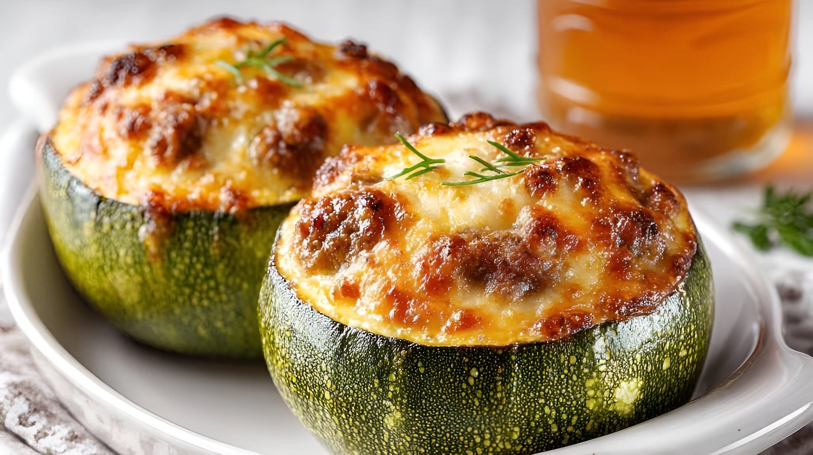

Zapallitos rellenos
Los zapallitos rellenos son un plato casero muy sabroso, donde los zapallitos se vacían y se rellenan con una mezcla de carne, arroz, verduras, queso o lo que prefieras. Luego se hornean hasta que estén tiernos y dorados. Son nutritivos, coloridos y perfectos como plato principal o acompañamiento.
Ingredientes
Preparación
- Llevar a una fuente de horno, precalentado a 180°, y cocinar hasta que el queso esté ligeramente gratinado. Unos 15/20 minutos. ¡Servir bien calientes!
- Cocinar los zapallitos en el microondas unos 5/7 minutos, pinchándolos un poco para que no se inflen y chequeando a mitad de la cocción. También se pueden cocinar unos minutos al horno. En todos los casos deben estar cocidos pero no demasiado blandos, porque se rompen.
- Picar la cebolla, el morrón y el ajo. Saltear en aceite hasta que la cebolla esté transparente.
- Incorporar la carne picada al sofrito. Ir revolviendo hasta que la carne esté bien separada y unida con las verduras. Agregar el caldo, el tomate y el pimentón y cocinar por 20-30 minutos, revolviendo ocasionalmente. Reservar y dejar enfriar.
- Una vez fríos los zapallitos, cortarles una tapita por arriba o por la mitad (como se prefiera) y ahuecarlos con una cuchara, cuidando que no se rompan y reservar la pulpa.
- Picar la pulpa de zapallitos y mezclarla con el relleno de la carne junto con las aceitunas picadas (si se usan) y mezclar bien.
- Colocar uno o dos trozos de queso dentro de cada zapallito ahuecado y rellenar con la mezcla de carne. Primero llenar bien el fondo (aplastar) y luego una buena cucharada por encima. Tienen que quedar cargados.
- Agregar, encima de cada zapallito, un trozo de queso y espolvorear con un poco de pan rallado.
Tips
Cociná un poco los zapallitos antes de rellenarlos, así quedan tiernos y se hornean más rápido sin que se desarmen.